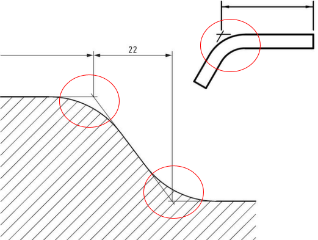
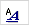
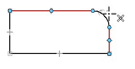
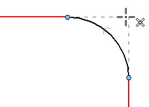
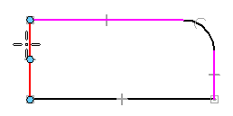
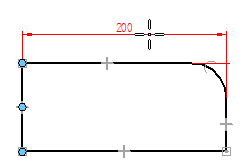
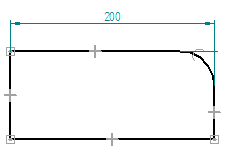

Place a dimension to a virtual intersection point
You can place a dimension between elements using a virtual intersection point. You also can show the projection lines to the virtual intersection point, similar to that shown in the example (a virtual sharp).

-
Choose the Home tab→Dimension group→Styles command

. -
In the Dimension Style dialog box, click Dimension, select a dimension style, and click Modify.
-
In the Modify Dimension Style dialog box, on the Lines and Coordinate tab, in the Projection Lines section, do the following:
-
Set the first Display list to Both, Origin, or Measurement.
-
Set the second Display list, Projection lines to virtual intersection point, to the same setting as above.
-
-
Choose the Distance Between command
 or the Angle Between
or the Angle Between  command.
command. -
Define the origin element for the distance between dimension—Locate and select the virtual intersection of two lines, for example, where a fillet was applied:
-
Hover over the first line.
-
Hover over the second line.
-
Move the cursor slightly to display the intersection point and click to select it.


Note:In a distance between dimension, the origin element is the first element or keypoint you click.
-
-
Click the measurement element for the distance between dimension.
The lines involved in the virtual intersection point remain highlighted until you select the second element.

Note:The measurement element is the element or keypoint you measure to.
-
Click to place the dimension.

